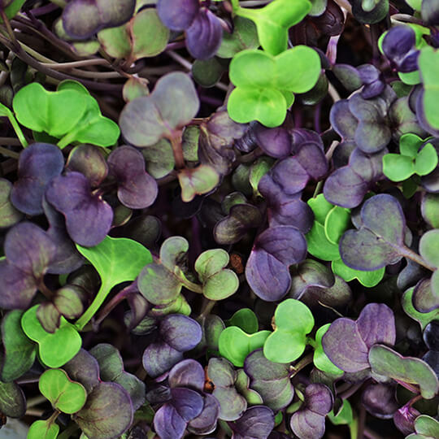

Освіжіть своє життя мікрозеленню
Наша зелень вирощується в закритому органічному ґрунті без використання добрив та хімікатів. Зрізування та пакування зелені відбувається безпосередньо перед доставкою. Дивитись каталог
Мікрозелень - це корисно
Термін «мікрозелень» не відноситься до якоїсь однієї рослини. Мікрозелень має хорошу поживну цінність та але містить багато вітамінів та мінералів, хоча люди не їдять її у великій кількості. Вона має набагато більше поживних речовин, ніж дорослі рослини, що дає нам цінну можливість впливати на здоров'я, якщо регулярно включати її у наше звичне харчування.
Паростки мають низький вміст жиру, калорій та натрію; легше засвоюються, ніж їхні аналоги дорослих рослин, тим самим зменшується навантаження на наш шлунково-кишковий тракт. Це недорогий суперпродукт, який ми всі маємо їсти більше!
Як споживати мікрозелень?
Варто пам’ятати, що мікрозелень не можна піддавати термічній обробці, адже частина корисних вітамінів та
мінералів є нестійкими до високих температур.
Ідеальні варіанти споживання мікрозелені:
- як додаток до салатів чи просто прикраса основних страв, гарнірів, бутербродів
- усі види мікрозелені
- у вигляді смузі з овочами, іншою зеленню, ягодами, фруктами
- солодкі види мікрозелені
- нейтральні види мікрозелені
-
як додаток до соусів і гуакамоле
- гострі сорти мікрозелені
Термін зберегання продукції
Зрізана мікрозелень зберігається трохи більше 7 діб у холодильних камерах за температури від 0°C до 6°C і відносної вологості повітря 90-95%.
Зростаюча мікрозелень у лотку з органічним субстратом зберігається довше - до 14 днів, та дозволяє зрізувати свіжу зелень безпосередньо перед вживанням. Але при цьому потрібно не забувати доглядати за нею: поливати простою водою один-два рази на день в залежності від температурних умов в вашому приміщенні. А якщо мікрозелень вже достигла, то також зберігати у холодильних камерах за тих самих умов, що й зрізану мікрозелень.
Наша мікрозелень
- Броколі
- Горох
-
Редис
- Санго
- Ред Корал
- Чайна Роуз
- Цибуля
- Рукола
Інші види мікрозелені
Якщо Ви бажаєте якийсь інший вид мікрозелені - спитайте наявність у магазині, або ми можемо виростити її під Ваше замовлення. Термін проростання залежить від конкретного виду мікрозелені.